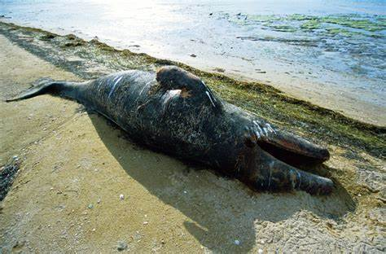

Loa animales en peligro de extinción en baja california son mas de 42 especies. Como estado, Baja California ocupa el puesto 14 a nivel nacional de biodiversidad de fauna silvetre. Cuenta con mas de 2400 especies de animales y su fauna se encuntra distribuida segun los ecosistemas redominantes de la region la peninsula de baja california se divide en 5 distritos faunisticos de los cuales 4 se encuetran en nuestro estado y uno en baja calfornia sur. en la region noroeste del estado el clima es tipo mediterraneo y se encuentra comprendida por los siguientes distritos faunisticos
v
Y los animales en peligro de extincion son los siguientes : vivora de cascabel(crotalus cerrastes),vivora de cascabel(crotalus enyo), borrego cimarron,puma,venado bura,zorra gris,lagartija cornuda,coyote,rata canguro,murcielago,mapache,conejo del desierto,liebre,ardillas,gato montes, antilope americano, son los animales que se encuentran en peligro de extincion aunque no son todos ellos por que son muchos animales pero aun asi nosotros no hacemos nada al respecto para tratar de acabar con todo esto, nosotros podemos evitar todo esto diciendo no a la caza y no a la venta de animales que estan en peligro de extincion o solo por ser animales exoticos digamos no a los animales que estan en peligro de extincion
